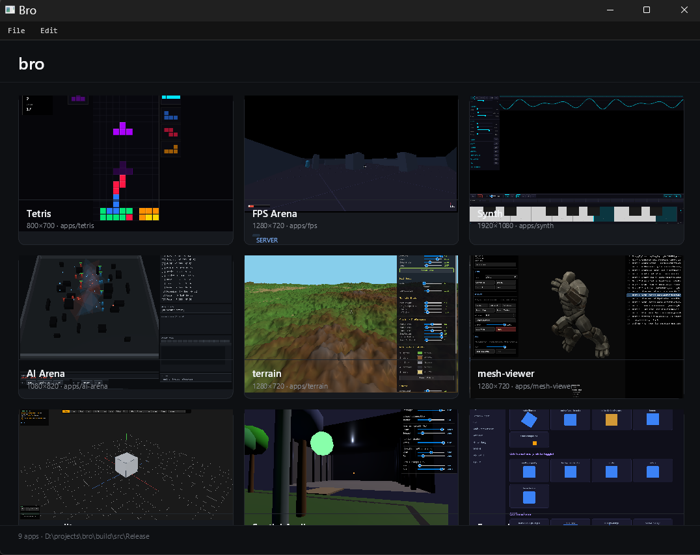

Coding agents build web UIs really well. Native UIs take more debugging to get right. Electron solves that, but only for what the web platform natively supports.
In bro, HTML/CSS/JS is the UI/app layer like Electron, but the rendering pipeline is ours — which means we can plug in whatever we want underneath. And we have: a 3D scene graph, Jolt physics, a real-time audio engine, mesh generation and CSG, navmesh pathfinding, game networking over GNS, native file dialogs, menu bars. All exposed to JS, all running in one process, no IPC to a Chromium renderer.
None of this is new. It's a reconfiguration that works better for coding agents.
Bro renders HTML and CSS with its own engine — not by embedding Chromium. Broparity is a side-by-side test suite that compares bro's output to Chromium pixel-by-pixel and structurally, on a curated set of layout cases. Latest published numbers, by host platform:
<!-- hello/index.html -->
<h1 id="msg">Hello</h1>
<button id="btn">Click me</button>
<script>
document.getElementById('btn').addEventListener('click', () => {
document.getElementById('msg').textContent = 'Hello, bro';
});
</script>bro path/to/helloNaked bro opens the built-in project manager. The launcher and a curated set of starter apps live in the sibling broworkshop repo — games, tools, demos, and AI/research apps you can clone and reshape.

Web platform — HTML5 parsing, CSS (flexbox, gradients, border radius, overflow/scroll), SVG, Canvas 2D, WebGL 2.0, Web Components with Shadow DOM, Web Workers, Fetch, localStorage, form controls with real text editing. three.js and jQuery work.
Beyond the web — 3D scene graph with mesh rendering and terrain (bro.scene), Jolt rigid-body physics with contact events, Web Audio with synthesis / effects / spatial / MIDI, mesh generation and CSG, navmesh and A* pathfinding (bro.ai.game), game networking over GameNetworkingSockets (bro.net), native file dialogs, native menu bars, 3D transform gizmos, native crosshair overlay.
For development — Headless mode runs the full pipeline (GPU, real fonts, WebGL) without a window, driven by JS with virtual time for deterministic testing.
Each API surface — audio, scene, physics, mesh, networking, AI, and the rest — is documented as an annotated .js file with JSDoc and usage examples. Guides cover headless mode, settings, the DOM inspector, projects, and multi-repo workflow.
QuickJS for JS · qjsbind for C++/JS bindings · brokit for web/system APIs · htmlayout for HTML parsing, CSS, and layout · broaudio for audio · bromesh for meshes · brogameagent for game AI · Jolt for physics · Skia for raster rendering · SDL3 for windowing and GPU display.
Each piece lives in its own sibling repo so it can be used independently of bro: qjsbind, brokit, htmlayout, broaudio, bromesh, brogameagent.